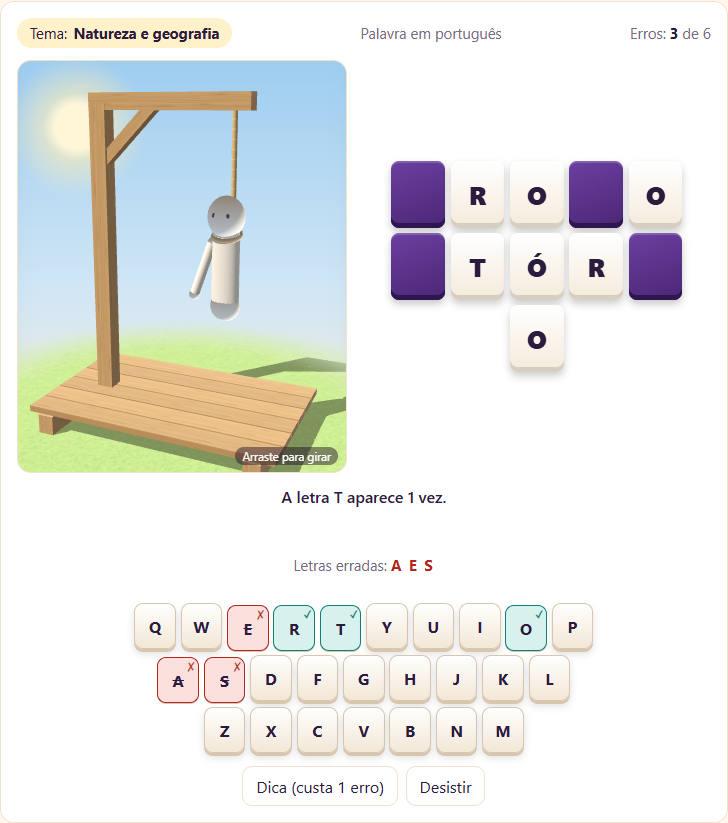
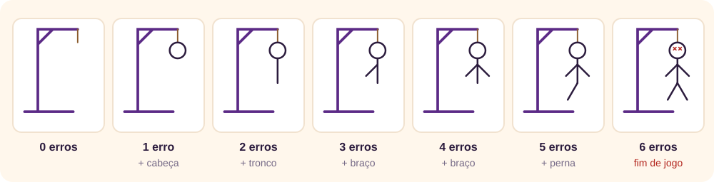
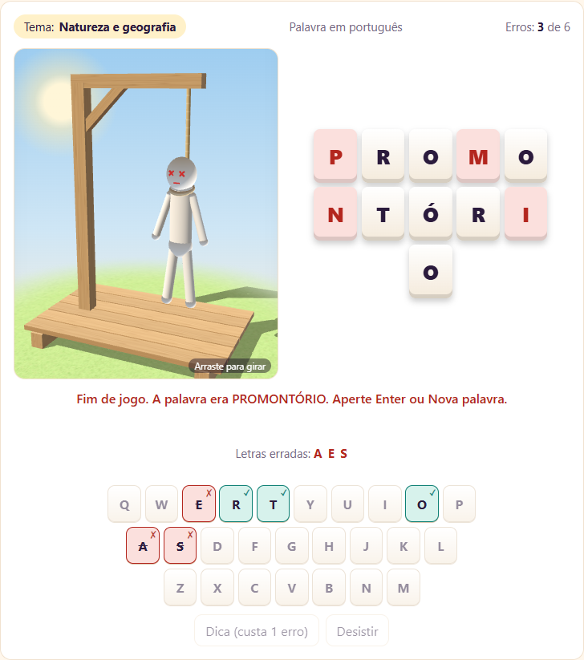
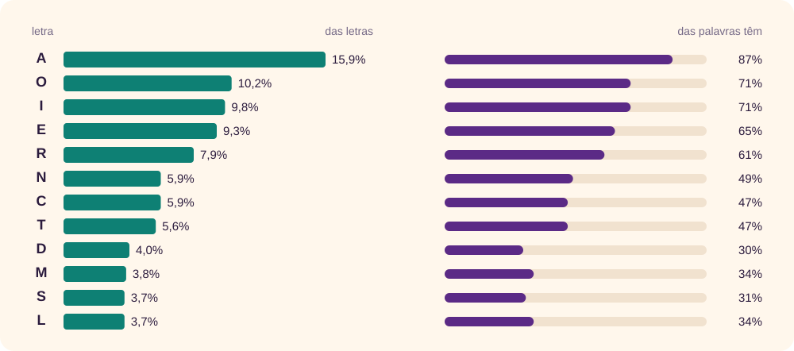

O jogo
Na forca, você tenta descobrir uma palavra escondida escolhendo uma letra de cada vez. Cada letra que não está na palavra desenha uma parte do boneco. Se o boneco ficar completo antes de a palavra aparecer, você perde. Esta versão tem 3000 substantivos de 8 letras ou mais em cada um de quatro idiomas, uma cena em 3D e uma dica por tema. [1]

Uma brincadeira antiga
Ninguém sabe ao certo onde a forca começou. A versão mais antiga conhecida aparece num livro de brincadeiras infantis reunido pela folclorista inglesa Alice Bertha Gomme em 1894, com o nome Birds, Beasts and Fishes (aves, animais e peixes), e ainda sem o desenho do enforcado. [2] [3] A imagem da forca só aparece descrita num jornal americano de 1902. [2]
O número de erros permitidos nunca foi fixo: há quem desenhe também rosto, mãos e sapatos para ganhar mais chances. [2] Aqui são 6 erros, um para cada parte do boneco.
↑ Voltar ao topoAs regras

- A palavra é sorteada no idioma da interface. O tema aparece no alto como pista.
- Escolha letras no teclado da tela ou no teclado do computador. Uma letra certa aparece em todas as posições da palavra.
- Acentos não contam: A revela Á, Ã e Â, e em português C revela Ç. Em espanhol, Ñ é uma letra própria, com tecla própria.
- A Dica revela uma letra escondida e conta como 1 erro. Não dá para usá-la no último erro.
- Desistir encerra a partida e conta como derrota. Trocar de palavra no meio de uma partida também.
- No fim, a palavra aparece inteira; as letras que faltavam ficam em vermelho. Enter sorteia a próxima.
A tela
No alto ficam o tema, o idioma da palavra e o contador de erros. À esquerda está a forca em 3D: arraste para girar a cena. As letras são peças que viram quando você acerta. Abaixo vêm a mensagem da última jogada, as letras erradas e o teclado.

Na lateral ficam três painéis: Temas, para sortear só palavras de um tema; Estatísticas, com vitórias, derrotas e sequências; e Semente, para repetir uma palavra. O botão ◐ alterna os temas claro e escuro, de dia e de noite também na cena 3D.
↑ Voltar ao topoAs palavras
Cada idioma tem 3000 substantivos de 8 a 20 letras, sem verbos, adjetivos, pronomes, plurais ou palavras compostas. Todas foram conferidas nos dicionários ortográficos do LibreOffice de cada língua. [4] O dicionário distingue os verbos; a separação entre substantivo e adjetivo foi revisada à mão, e palavras com os dois usos comuns ficaram de fora.
| Tema | Português | Inglês | Italiano | Espanhol |
|---|---|---|---|---|
| Mundo animal | 175 | 149 | 149 | 114 |
| Mundo vegetal | 138 | 124 | 105 | 98 |
| Comida e bebida | 189 | 138 | 145 | 107 |
| Corpo e saúde | 160 | 130 | 133 | 116 |
| Casa e objetos | 174 | 115 | 136 | 123 |
| Ferramentas e tecnologia | 127 | 105 | 114 | 97 |
| Transporte | 96 | 104 | 111 | 83 |
| Roupas e acessórios | 77 | 95 | 97 | 64 |
| Lugares e construções | 162 | 144 | 165 | 147 |
| Natureza e geografia | 91 | 104 | 89 | 83 |
| Ciência e escola | 148 | 149 | 131 | 128 |
| Profissões e ofícios | 199 | 261 | 251 | 262 |
| Esportes e lazer | 101 | 84 | 113 | 81 |
| Música, arte e cultura | 121 | 90 | 116 | 100 |
| Sociedade e economia | 200 | 188 | 187 | 167 |
| Ideias e sentimentos | 337 | 425 | 378 | 511 |
| Ações e processos | 505 | 595 | 580 | 719 |
A palavra mais longa em português é otorrinolaringologia, com 20 letras. Em inglês é telecommunications (18), em italiano approvvigionamento (18) e em espanhol institucionalización (20).
↑ Voltar ao topoEstratégias
Uma estratégia comum é começar pelas vogais, porque quase toda palavra tem pelo menos uma. [2] Nas listas deste jogo isso é ainda mais forte: todas as 3000 palavras de cada idioma têm vogal. A figura mostra quais letras aparecem mais nas palavras em português.

A coluna da direita é a mais útil: ela diz em que parte das palavras a letra aparece pelo menos uma vez. Em português, o A está em 87% delas; o R, em 61%. Em inglês as quatro primeiras são E, I, O e A; em italiano, A, O, I e E; em espanhol, A, I, O e E. Essas contagens valem para estas listas de substantivos longos e não para textos comuns: em textos em inglês, por exemplo, a ordem citada é E, T, A, O, I, N. [2]
Use o tema
Em Profissões, 131 das 199 palavras terminam em -or, -eiro/-eira ou -ista. Em Ações e processos, procure -ção e -mento: na lista toda, 334 palavras terminam em -ação e 223 em -mento.
Olhe o tamanho
A média é de quase 10 letras. Palavras muito longas quase sempre carregam um sufixo conhecido.
Guarde a dica
A dica custa um erro. Ela rende mais quando restam muitas lacunas e poucos palpites bons.
Evite as raras cedo
Em português, K e W aparecem em menos de 5 palavras da lista; Z, Q, J e X, em menos de 200 ocorrências cada.
Semente e desafios
Cada palavra vem de uma semente, um número mostrado no painel lateral. A mesma semente, com o mesmo tema e o mesmo idioma, sorteia sempre a mesma palavra. Para desafiar alguém, passe o número; a pessoa digita no campo Semente e clica em Jogar.
Sem semente, o jogo evita repetir palavras: uma palavra só volta depois que todas do filtro escolhido foram sorteadas. Esse controle é separado para cada idioma.
↑ Voltar ao topoPrimeira partida passo a passo
- Abra o jogo. A interface e as palavras seguem o idioma do seletor no alto.
- No painel Semente, digite
2026e clique em Jogar. Em português sai uma palavra de 11 letras do tema Natureza e geografia. - Digite A, E e O no teclado do computador. O A e o E erram; o O aparece em quatro posições, uma delas com acento.
- Digite R, S e T. O R e o T acertam; o S erra. Você está com 3 erros, como na primeira figura.
- Clique em Dica e veja uma letra nova aparecer e o contador subir para 4.
- Tente terminar. Se perder, a palavra aparece com as letras que faltavam em vermelho; aperte Enter para a próxima.
- No painel Temas, escolha um tema e veja quantas palavras dele ainda não foram sorteadas.
Erros comuns
Trocar de palavra para fugir
Pedir uma palavra nova no meio da partida conta como derrota e zera a sequência.
Esperar Ñ no N
Em espanhol, a tecla N não revela o Ñ. Use a tecla própria.
Mudar de idioma no meio
A palavra da partida em andamento continua no idioma original; só a próxima vem no idioma novo.
Gastar a dica cedo
Com poucas letras reveladas, a dica mostra pouco e custa o mesmo erro.
Para fixar
- 6 erros e o boneco se completa.
- Acentos não contam; em espanhol, Ñ é letra própria.
- Comece pelas vogais e use o tema para pensar em sufixos.
- A mesma semente, tema e idioma repetem a mesma palavra.
Revisão rápida
Tente responder antes de abrir cada pergunta.
1. Quantos erros são permitidos?
Seis. O sexto completa o boneco e encerra a partida.
2. A letra C revela Ç em português?
Sim. Acentos e cedilha não contam; só em espanhol o Ñ é uma letra separada.
3. Quanto custa a dica?
Um erro. Por isso ela não pode ser usada quando falta só um erro para perder.
4. Qual letra está em mais palavras da lista em português?
O A, presente em 87% das 3000 palavras.
5. Como desafiar alguém com a mesma palavra?
Passe o número da semente, o tema e o idioma. A pessoa digita a semente e clica em Jogar.
Referências
- Giovani Perotto Mesquita, “Jogo da forca”, jogo em um único arquivo HTML, giovanipm.github.io/JogoDaForca.html. As porcentagens de letras e as contagens de palavras deste tutorial foram medidas por script nas listas do jogo, sem acentos.
- Wikipedia (em inglês), “Hangman (game)”, acesso em 21/11/2026, en.wikipedia.org/wiki/Hangman_(game). Cita o livro de Gomme (1894) e o artigo “A White Cap Party”, The Philadelphia Inquirer, 16/02/1902.
- Alice Bertha Gomme, The Traditional Games of England, Scotland, and Ireland, v. 1, Londres, David Nutt, 1894, archive.org/details/traditionalgames01gomm. A página do acervo não indica em que página está a brincadeira Birds, Beasts and Fishes.
- LibreOffice, dicionários ortográficos pt_BR, en_US, it_IT e es_ES, acesso em 21/11/2026, github.com/LibreOffice/dictionaries.